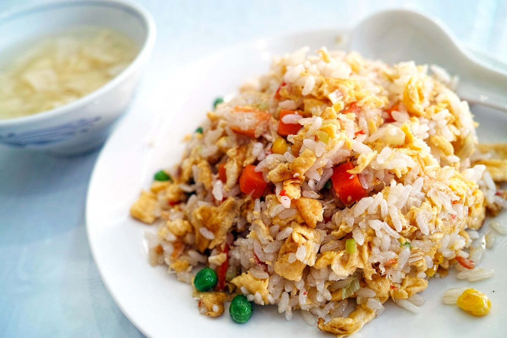

Fried Rice

Description
Fried rice is a traditional Chinese preparation of cooked rice, vegetables, protein,
soy sauce, and aromatics. The ingredients are stir-fried in a large pan or wok for
even flavor distribution. An ideal use for leftovers, fried rice is quick,
customizable, and incredibly simple to put together with whatever is in your
fridge.
Ingredients
- 2/3 cup chopped baby carrots
- 1/2 cup frozen green peas
- 2 tablespoons vegetable oil
- 1 clove garlic, minced, or to taste (Optional)
- 2 large eggs
- 3 cups leftover cooked and chilled white rice
- 1 tablespoon soy sauce, or more to taste
- 2 teaspoons sesame oil, or to taste
Steps
- Assemble ingredients.
- Place carrots in a small saucepan and cover with water.
Bring to a low boil and cook for 3 to 5 minutes. Stir in peas,
the immediately drain in a colander.
- Heat a wok over high heat. Pour in vegetable oil, then stir in
carrots, peas, and garlic; cook for about 30 seconds. Add
eggs; stir quickly to scarmble eggs with vegetables.
- Stir in cooked rice. Add soy sauce and toss rice to coat.
Drizzle with sesame oil and toss again.
- Serve hot and enjoy!
Link to Home Page
Home